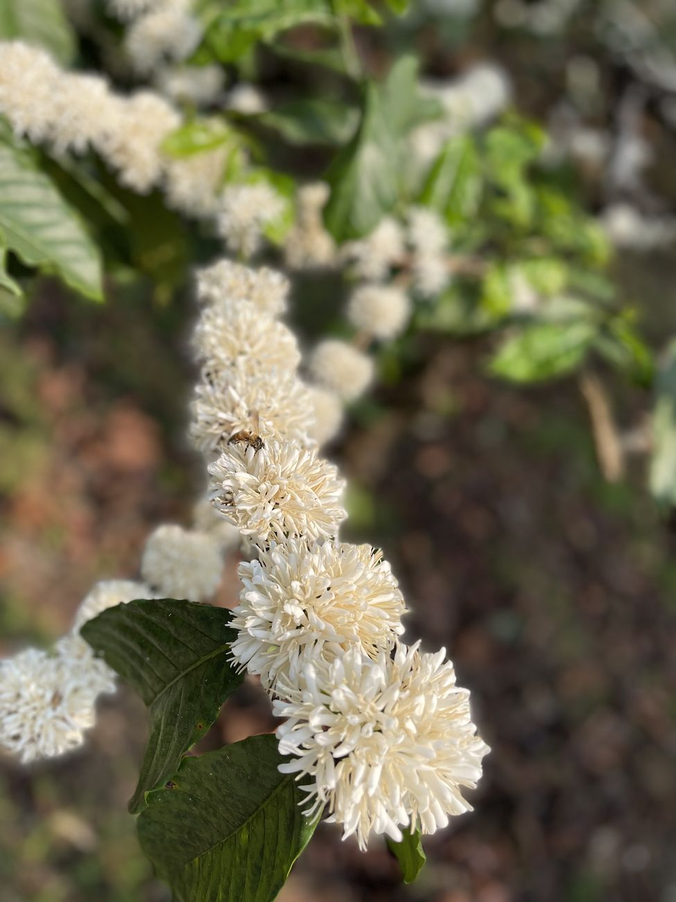

From India’s coffee landscapes to a community in Atlanta.
Kuyil Origins started with a simple idea. We wanted to share a fuller story of Indian coffee, one that goes beyond the cup and speaks to the people, places, and traditions behind it.
The Coffee
The coffees we choose come from time spent at origin. We visit estates, walk through the farms, cup with producers, and learn how each lot was grown and processed. We look for coffees with character, clarity, and a strong sense of place.

The Kuyil
The name Kuyil comes from the koel, a bird that is deeply familiar across India. Its call has been part of poetry, music, and storytelling for generations, often associated with spring, longing, renewal, and the changing of seasons.
In India’s coffee-growing hills, the kuyil becomes part of the rhythm of blossom season. After the first rains, coffee trees burst into small white flowers and the valleys fill with a fragrance that is almost jasmine-like. Around the same time, the call of the kuyil carries through the trees. It is a brief but beautiful moment when the landscape feels completely alive. That feeling became an important part of the Kuyil identity.

The Mark
Our logo also carries pieces of both places that shape the brand. The small forms within it resemble coffee beans, a quiet reference to what sits at the heart of Kuyil. The larger shape was designed with the idea of land, memory, and marks left behind over time. It draws inspiration from Atlanta’s Eagle Rock formations, connecting the brand to the city where Kuyil is taking root, while also looking back to the ancient rock art traditions found across parts of the Western Ghats in India.
We wanted the mark to feel timeless rather than overly polished, almost as though it could have been carved, drawn, or discovered. That balance felt right for Kuyil. It brings together the landscapes where the coffee begins with the place from which we now share it, creating a visual link between India and Atlanta, origin and home.
Kuyil Origins is our way of connecting those places through coffee. Each lot carries a story of land, people, process, and season, and we want to share that story with the people who roast it, brew it, and drink it.